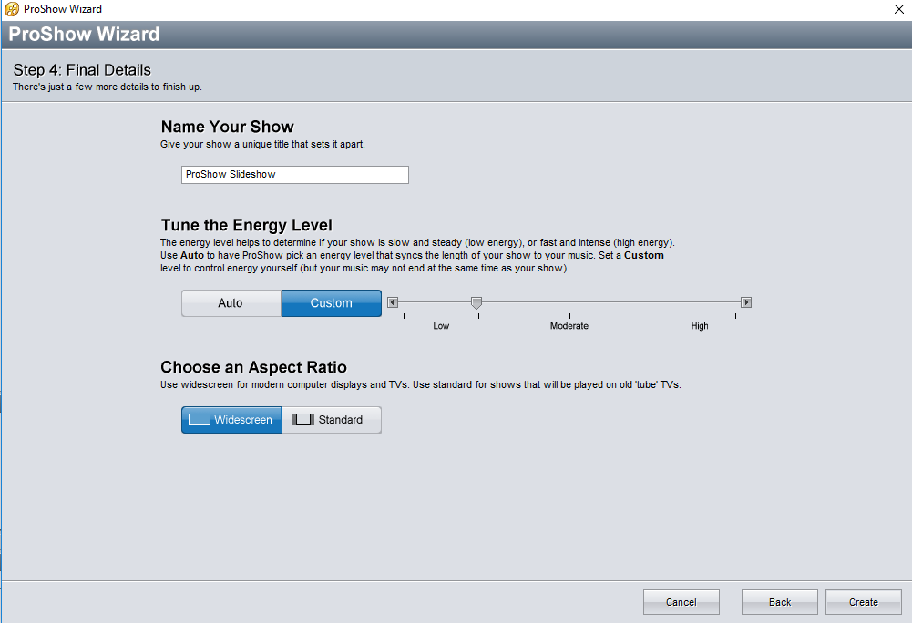

در این بخش به آموزش کامل نرم افزار میپردازیم.
معرفی نرم افزار:
نرم افزار pro show gold توسط شرکت photodex معرفی شد.

از قابلیت های این نرم افزار میتوان به اسلاید کردن عکس ها، تغییر نحوه نمایش اسلاید ها، ایجاد اسلاید با ویزارد خود برنامه که کار را راحت تر میکند، صدا گذاری بر روی اسلاید ها، ویرایش صدا در خود نرم افزار، قابلیت انتشار و اوتو ران کردن اسلاید ها در خود نرم افزار و... . در ادامه مطلب ما به شما آموزش این نزم افزار را قرار داده ایم.
ویدیوی آموزشی:
!!ین بخش ویدیوی آموزشی ندارد!!
تهیه اسلاید با استفاده از منو آماده برنامه:
نرم افزار pro show gold یک منو آماده ای برای کاربران طراحی کرده است تا کاربران مبتدی به سادگی بتوانند از آن استفاده کنند. در ادامه به آموزش این بخش می پردازیم.
در ابتدای ورود به برنامه با منویی به شکل زیر مواجه میشویم که برای استفاده از منو آماده، گزینه wizard را در این بخش انتخاب کرده (به طور پیش فرض انتخاب شده است) و گزینه create را کلیک می کنیم.
سپس با بخش روبرو مواجه میشویم که برای وارد کردن عکس میباشد. (آموزش کامل آن در ویدیوی آموزشی)

بعد از کلیک بر روی next در بخش قبلی با پنجره زیر مواجه میشویم که برای انتخاب موزیکی هست که میخواهیم بر روی اسلاید ما قرار گیرد. (آموزش کامل آن در ویدیوی آموزشی)

بعد از کلیک کردن next در بخش انتخاب موزیک با بخش مهم انتخاب نحوه نمایش اسلاید ها مواجه میشویم. (آموزش کامل آن در ویدیوی آموزشی)
بعد از کلیک کردن next در بخش انتخاب نحوه نمایش اسلاید ها با تنظیمات اخر اسلاید که شامل نام پروزه مقدار صدا و اندازه نمایش اسلاید هست مواجه میشویم. (آموزش کامل آن در ویدیوی آموزشی)

در اینجا یک نمایشی از پروژه به شما نشان داده میشود. با کلیک کردن بر روی next پروژه شما ایجاد شده است. سپس با پشت سر گذاشتن مرحله ای دیگر پروژه شما کاملا تمام میشود.
این مرحاه مرحله پایانی کار و برای ذخیره در کامیوتر یا انتشار دادن پروژه در فضای محازی است.
ویدیوی آموزشی:
تهیه اسلاید با استفاده از صفحه خالی:
اگر بخواهیم اسلاید خود را با دقت و سلیقه کامل خود درست کنیم نرم افزار به ما این امکان را میدهد که یک صفخه خالی ایجاد کنیم و به سلیقه خود اجزای آنرا بچینیم.
در این بخش به چگونگی استفاده از صفحه خالی میپردازیم.
با انتخاب blank show و زدن گزینه crate صفحه خالی ایجاد میشود.
برای وارد کردن عکس به صفحه خالی با انتخاب محل عکس ها از سمت چپ صفحه وانتخاب انتخاب عکس هادر پایین آن و راست کلید کردن بر روی آن و زدن گزیننه اول امکان پذیر است.

!! چگونگی استفاده از دیگر بخش های دیگر این نوع تولید اساید در ویدیوی این بخش و ویدیوی بخش بعدی به طور کامل توضیح داده شده اند.
ویدیوی آموزشی:
توضیح کلی منو ها:
در این بخش توضیحی کلی در مورد منو ها وبخش های برنامه داده میشود.
ابتدا به توضیح کاملی از بخش های اصلی نرم افزار میپردازیم.

در اینجا به این میپردازیم که هر کدام از دکمه های درون برنامه چه کاری انجام میدهند.
!! تقریبا تمامی این بخش با ویدیو آموزش داده شده است.
ویدیوی آموزشی:(!! این فیلم با صدا هست)
ویرایش نحوه نمایش اسلاید ها:
وقتی یک اسلایدی را ایجاد میکنید برایتان پیش می آید که بخواهید چگونگی نمایش آنها را تغیر دهید یا زمان وچگونگی رفتن و آمدن اسلاید.
در این بخش به این موضوع میپردازیم و به شما آموزش میدهیم چگونه نحوه نمایش اسلاید ها را اصلاح کنید.

!! تقریبا تمامی این بخش با ویدیو آموزش داده شده است.
ویدیوی آموزشی:
ویرایش صدا:
هنگامی که ما صدایی بر روی اسلایدمان میگذاریم شاید بخواهیم آن را ویرایش کنیم یا زمانبندی کنیم.
در این بخش ما به شما آموزش میدهیم که چگونه صدا را ویرایش کنید یا زمانبندی کنید.
!! تقریبا تمامی این بخش با ویدیو آموزش داده شده است.
ویدیوی آموزشی:
انتشار:
بعد از این که مراحل اسلاید را پشت سر گذاشتید و اسلاید شما آماده شد شما قطعا میخواهید آن را در فضای محازی انتشار دهید یا در کامپیوتر خود ذخیره کنید.
در این بخش چگونگی انتشار یا ذخیره اسلاید در کامپیوتر را به شما آموزش میدهیم.
!! تقریبا تمامی این بخش با ویدیو آموزش داده شده است.
ویدیوی آموزشی: